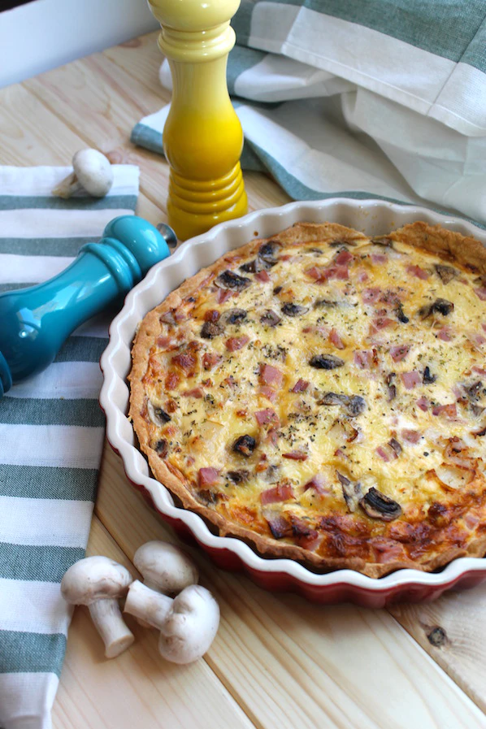

Quiche Lorraine

Para: 6 personas
Contiene huevo
Contiene lácteos
Contiene gluten
Ingredientes
| Ingrediente | Cantidad |
|---|---|
| Masa brisa | 1 base |
| Huevos | 3 |
| Queso rallado | 100 g |
| Tocineta | 150 g |
| Leche | 100 ml |
| Sal | Al gusto |
Utensilios
- Horno
- Molde redondo
- Cuenco o ensaladera
- Espátula
- Tenedor
Preparación
- Precalienta el horno a 200 °C.
- Extiende la masa brisa sobre el molde y pincha la superficie con un tenedor.
- En un recipiente, bate los huevos y añade la leche.
- Vierte la mezcla sobre la masa y distribuye la tocineta de forma uniforme.
- Añade queso rallado al gusto, cubriendo toda la superficie.
- Hornea durante 40 minutos, hasta que cuaje y esté dorada.